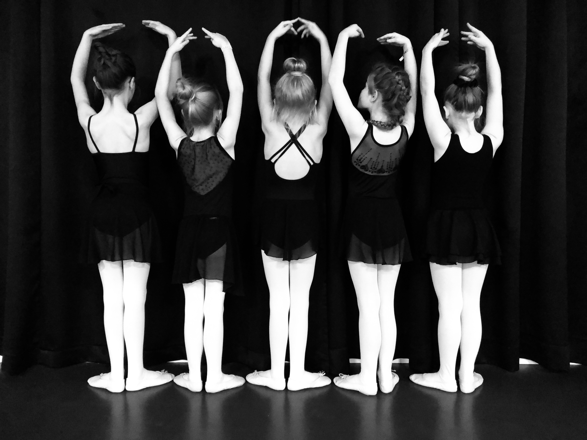
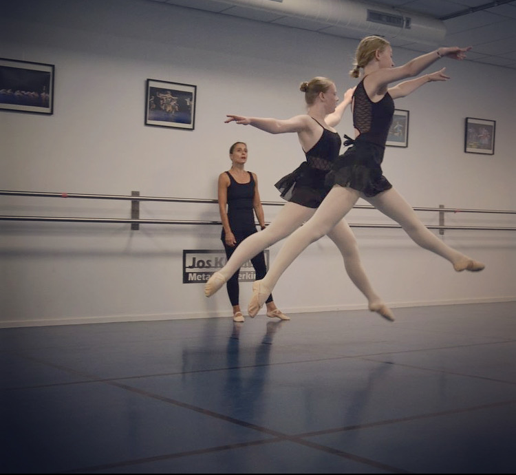
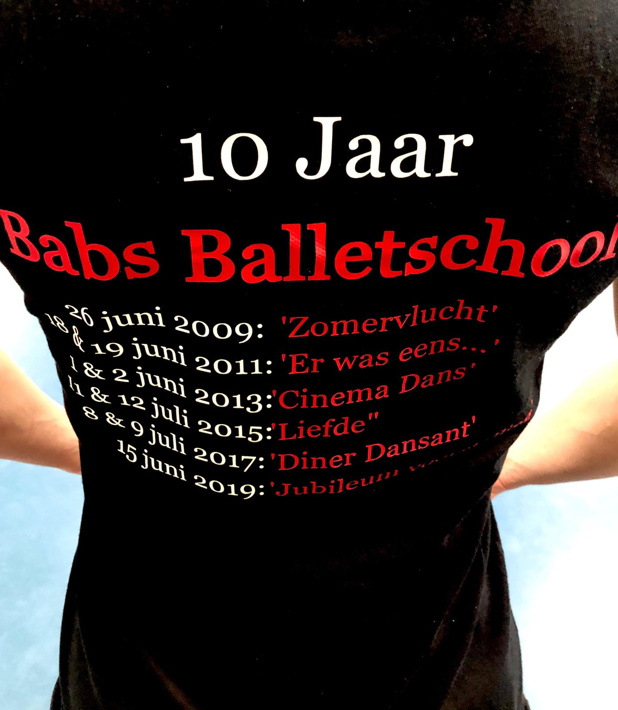

Kledingvoorschrift
Het dragen van de juiste danskleding is voor de leerlingen essentieel om goed te kunnen bewegen en voor de docent noodzakelijk voor het geven van goede correcties. Het geeft tevens een gevoel van rust en éénheid.
De geschikte danskleding koopt u bij theaterwinkel "PODIUM" van Welderenstraat 107 te Nijmegen. www.podium-nijmegen.nl
Leerlingen van Babs Balletschool krijgen bij PODIUM 10% korting op hun danskleding/schoenen.
Algemeen:
- Het haar dient te worden opgestoken in knot of staartje, plukken uit het gezicht, geen los haar!
- Vestjes e.d. mogen in overleg
- Draag geen sieraden tijdens de les
- Kauwgom is te allen tijde verboden
Peuterdans ( 2-4 jaar P1)

- makkelijk zittende kleding, legging met hemdje of een ballet/gympakje.
- leren balletschoenen
ballet 4 t/m 6 jaar: (K1 & K2)
.JPG)
Combinatie 1:
Roze ballet pak hemdmodel of spaghettibandjes met vast rokje. (bijv. de Intermezzo 3057)
Roze ballet panty met voetjes
Roze leren balletschoenen
Of:
Combinatie 2:
- Zwarte short of legging.
- Wit hemd (strak) of wit balletpak
- Zwarte balletschoenen
ballet 7 tot 9: (K3 & K4)
 Combinatie 1:
Zwart balletpak hemdmodel of spaghettibandjes.
Roze balletpanty met voetjes.
Roze leren balletschoenen.
Zwart rokje (niet verplicht)
Of:
Combinatie 2:
- Zwarte legging.
- Wit hemd (strak) of wit balletpak
- Zwarte balletschoenen
Ballet vanaf 9 jaar: (vanaf B1)

combinatie 1:
- Zwart balletpak.
- Roze balletpanty met voetjes.
- Roze canvas balletschoenen met splitzool.
- Zwart broekje of rokje. (niet verplicht)
Of:
combinatie 2:
- Zwarte legging.
- Zwart hemd (strak) of Zwart balletpak.
- zwarte leren/Canvas balletschoenen
Ballet volwassenen

- Zwart Balletpak
- Zwarte legging of roze/zwarte panty.
- Roze canvas balletschoenen met splitzool.
Jazz ballet:

- Zwart balletpak of zwart shirt (strak)
- Zwarte legging /jazzbroek of zwarte panty zonder voet.
- Zwarte (Jazz)balletschoenen.
Moderne dans:
.jpg)
- Zwart balletpak of zwarte top.
- Zwarte legging /jazzbroek of zwarte panty zonder voet.
- Blote voeten/ footundies of zwarte sokken
Flamenco:

- Zwart aansluitend shirt of balletpak.
- Cirkelrok tot enkels (kan evt. geleend worden tijdens de les) of zwarte lange broek.
- zwarte flamenco schoenen (zonder spijkertjes!) of dansschoenen Capezio 653.

T-shirt van Babs Balletschool : Volw: €25,-/ Kids €22,50
Hoodie zonder rits van Babs Balletschool: Volw:€37,50,-/ Kids €35,-
Hoodie met rits van Babs Balletschool: Volw: €42,50/ Kids €39,-
(evt. personalized met je eigen naam voor €2,50 extra.)
evt is ook te bestellen; cropped shirts/legging/hemd.
te bestellen in zwart in diverse maten. bestel via babs@babsballetschool.nl
Hoe maak ik een balletknotje